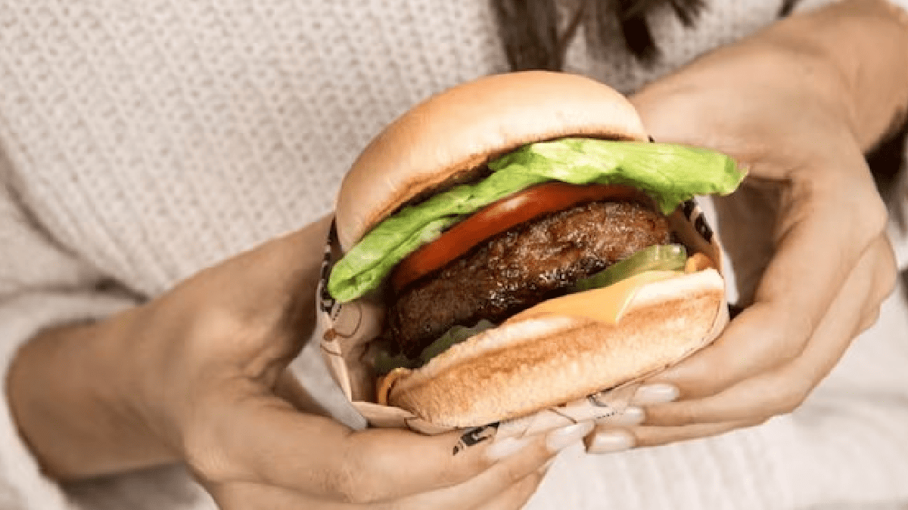

La Nueva Hamburguesa Gourmet que Revoluciona el Mundo Culinario
En los últimos meses, una nueva hamburguesa ha causado sensación en el mundo gastronómico: la "Hamburguesa del Chef", una creación innovadora que fusiona sabores tradicionales con toques modernos. Presentada en el famoso restaurante Burgers & Co., la hamburguesa promete no solo ser una explosión de sabores, sino también una experiencia culinaria única. La clave de esta hamburguesa está en su carne de res, criada de manera orgánica y sin antibióticos, garantizando una textura y sabor inigualables. Pero lo que realmente la hace especial son los ingredientes adicionales: una mezcla de quesos artesanales, cebolla caramelizada al vino tinto, un toque de mostaza trufada y, para darle un giro aún más sorprendente, una capa de helado de crema de leche que se derrite suavemente en el pan.
Los expertos gastronómicos aseguran que esta hamburguesa desafía las normas tradicionales, pero es una muestra de cómo la creatividad en la cocina puede ofrecer experiencias inesperadas y deliciosas. Los comensales han quedado impresionados por la armonía de los ingredientes, que logran equilibrar la textura crujiente y suave con una mezcla de sabores intensos. A pesar de su precio elevado, muchos consideran que vale la pena la experiencia. El chef responsable de esta obra maestra culinaria, Carlos Méndez, afirma que la clave está en no tener miedo a experimentar con lo inesperado. "La gastronomía es una forma de arte, y como tal, debe evolucionar constantemente", comentó Méndez durante la presentación oficial de la hamburguesa. ¿Estás listo para probarla? Esta hamburguesa se ha convertido en una de las más comentadas de la temporada y no parece que su popularidad vaya a disminuir pronto.